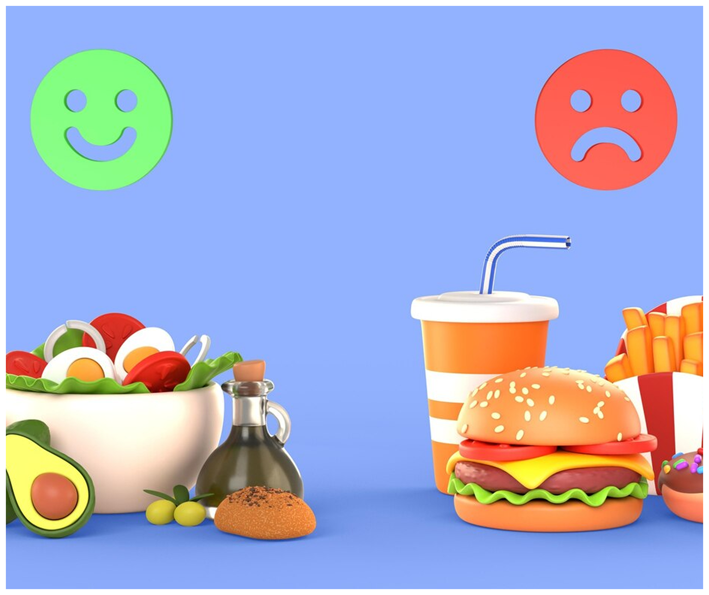

Sayangi Kandunganmu, Siapkan Masa Depan Si Kecil dengan Ilmu & Kasih!
Temukan berbagai informasi penting seputar kehamilan untuk mendampingi setiap langkahmu menjadi ibu yang siap, percaya diri, dan bahagia hingga menyambut si kecil.

Chat AI Pintar
98% Ibu Terbantu
Diagnosa Otomatis


Tentang Kami
Meningkatkan Edukasi untuk Ibu Hamil di Seluruh Indonesia
Prenatix, platform edukasi ibu hamil dengan materi dan fitur interaktif untuk mendampingi dari awal kehamilan hingga persalinan.
15K+
Ibu hamil terbantu
Ribuan ibu telah merasakan manfaat edukasi yang kami sediakan untuk mendampingi setiap fase kehamilan mereka.
24/7
Informasi nonstop
Akses informasi kapan saja, tanpa batas waktu karena kehamilan butuh dukungan setiap saat.
Layanan Kami
Dukung Setiap Langkah Kehamilanmu dengan Layanan Terbaik
Prenatix menyediakan berbagai fitur edukatif dan dukungan pintar untuk menemani perjalanan kehamilan dengan aman, nyaman, dan penuh informasi.
Konsultasi AI Pintar
Dapatkan jawaban cepat dan akurat seputar kehamilan melalui fitur tanya jawab otomatis.
Diagnosa Otomatis
Kenali gejala awal kehamilan dan dapatkan saran awal secara instan dengan teknologi pintar.
Game Edukasi Kehamilan
Belajar sambil bermain! Uji pengetahuanmu tentang kehamilan lewat game interaktif yang seru.

Kuis Kehamilan
Uji pengetahuan Ibu soal kehamilan lewat pertanyaan seru dan edukatif. Belajar sambil bermain!

Hindari Makanan Buruk
Kontrol karakter Ibu untuk menangkap makanan sehat dan menghindari yang tidak baik.


Jaga Kesehatan, Jalani Kehamilan dengan Tenang
Prenatix hadir untuk mendukung setiap ibu hamil dalam menjalani masa kehamilan yang sehat dan penuh makna. Dengan fitur pintar, informasi terpercaya, dan pendekatan penuh kasih, kamu tidak sendirian dalam setiap langkah.
Fitur Interaktif yang Mendukung Perjalanan Ibu Hamil
Informasi Kehamilan Lengkap & Terupdate
Diagnosa Awal Secara Otomatis
Kenapa Memilih Prenatix?
Bersama Prenatix, Jalani Kehamilan dengan Tenang & Penuh Kasih

Gratis & Terjangkau
Dapatkan akses informasi dan fitur edukasi tanpa biaya.

Didukung Tenaga Profesional
Disusun oleh tenaga ahli dan terpercaya di bidangnya.

Akses Fleksibel 24/7
Kapan pun butuh bantuan, Prenatix siap menemani.
Statistik Kasus Keguguran Tahunan
Dengan memantau data keguguran setiap tahun, kita dapat memahami tren peningkatan maupun penurunan kasus. Informasi ini sangat penting untuk merancang strategi pencegahan, memberikan edukasi kepada calon ibu, serta mendukung deteksi dini agar kesehatan ibu dan janin tetap terjaga secara optimal.
Data Statistik pertahun
Data Kehamilan
Tips Menjaga Kehamilan Sehat
Kumpulan strategi sederhana dan efektif untuk mendukung kesehatan ibu hamil serta tumbuh kembang janin agar tetap optimal, nyaman, dan aman sepanjang masa kehamilan.
Lihat Apa Kata Para
Ibu Hamil:
Kami senang melihat para ibu hamil merasa terbantu selama menggunakan Prenatix. Berikut ini adalah beberapa pengalaman mereka yang membagikan manfaat yang mereka rasakan selama kehamilan.
Edukasi Kehamilan Premium, Gratis untuk Semua Ibu!
Setiap ibu berhak mendapat edukasi kehamilan terbaik. Prenatix hadir dengan fitur pintar dan informasi lengkap yang bisa diakses gratis, kapan saja.